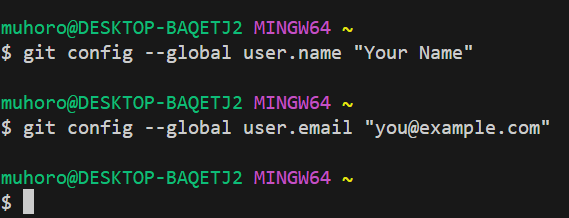
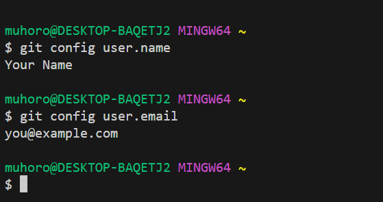
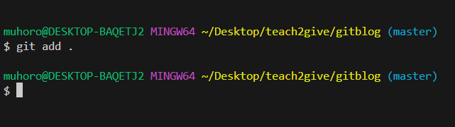
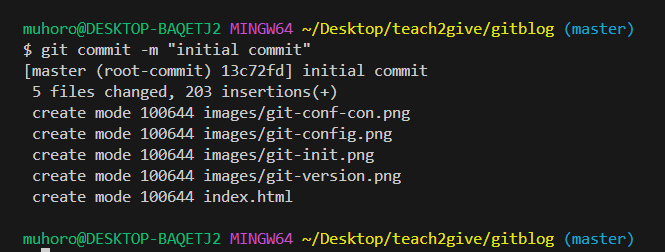
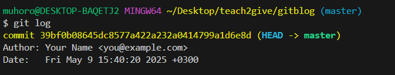
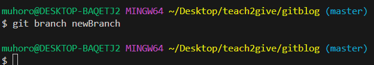
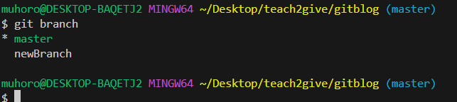
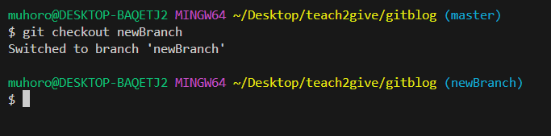
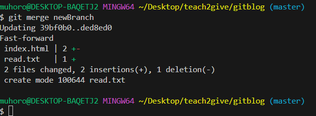
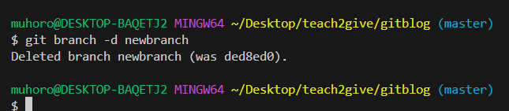

Git is a Version Control System (VCS). That means it helps you keep track of changes you make to your files over time.
It's like a magical "undo" button that lets you go back to an earlier version if something goes wrong.
Git is especially popular among developers, but anyone working with files can use it — writers, designers, researchers, and more!
A Version Control System allows you to:
Save different versions of your project
Go back to previous versions when needed
Collaborate with others without losing track of progress
There are other version control tools like SVN (Subversion), Mercurial, and Perforce,
but Git is by far the most popular and widely used today.
In this blog, we'll focus on Git for tracking changes.
Then follow the steps for your computer (Windows, Mac, or Linux).
3. Setting Up Git
Before you start using Git, you need to tell it who you are. This helps track who made which changes.
Use the following commands to set your name and email address:
The --global option means this name and email will be used for all your Git projects.

Screenshot: Setting your Git username and email globally
To confirm if you have successfully set your username and email run the following
to check for name run git config user.name
to check for email run git config user.email

Screenshot: Checking your Git username and email
4. Get Started
Create a folder for your work let say gitblog. Inside that
folder, make a file named index.html. You can use any code
editor like VS Code or any tool you like.
Start Using Git
A Git repository is like a storage box where Git keeps
track of your project's history. It allows you to save versions of your
code, go back to earlier stages, and collaborate with others.
To check if you're already in a Git repository, type:
git status
If Git is not active yet, you'll see a message saying the folder is not
a repository.
Screenshot: Checking if Git is active
To turn your current folder into a Git repository, run:
git init
This command tells Git to start watching your folder. It creates a
hidden .git folder that stores all the history and
settings.
Screenshot: Initializing a Git repository
Now you've got a Git repository! You're ready to start tracking your
work.
5. Get Your Files Ready to Save (Staging)
After you create or modify files in your project, Git doesn't
automatically save them. Instead, Git uses something called the
staging area (also known as the index) to help
you choose which changes to save (commit) next.
Think of the staging area as a preparation zone. You tell Git: "These
are the changes I want to include in my next save."
Tracked vs Untracked Files
Untracked Files: Files Git is not yet monitoring.
These are usually new files you've just created.
Tracked Files: Files Git is already watching. Changes
in these files will show up when you check status, and you can stage
them.
Adding Files to the Staging Area
You can add individual files like this:
git add filename
Or, add all changes in the current directory and subfolders:
git add .
Another way to add specific file types:
git add *.html adds all HTML files.
Or to interactively choose files to stage:
git add -p — lets you go through each change and choose
whether to stage it.
Here's an example of adding files using git add .

Screenshot: Adding files to the staging area using git add
Once you've staged the changes, Git is now ready to commit them. Staged
changes are like "files selected to be saved." If you forget to stage
something, it won't be saved in the next commit.
6. Save Your Work (Commit)
Once you've added files to the staging area, it's time to save your work
in Git. This saved snapshot is called a commit.
Making a Commit
Use the following command to commit your staged changes:
git commit -m "Write a short message here"
The message inside the quotes should briefly describe the purpose of the
changes. A good commit message helps both you and your teammates
understand the history of the project.
Writing Great Commit Messages
Use the present tense: e.g Fix bug not
Fixed bug
Keep it short and clear: eg Add login form validation
Explain why the change was made if necessary.
Example:
git commit -m "initial commit"

Screenshot: Committing changes in Git
Alternative Way to Write Detailed Commit Messages
Instead of using the -m option, you can simply type:
git commit
This will open your default text editor (such as Vim,
Nano, or VS Code). Inside the editor:
This method is preferred in larger teams and open-source projects
because it improves the clarity and professionalism of your commit
history.
Configure VS Code as Your Git Commit Editor
By default, Git might open editors like Vim or Nano when writing commit
messages. If you prefer using Visual Studio Code, you can set it as your
default Git editor with:
git config --global core.editor "code --wait"
The --wait flag tells Git to pause until you're done
writing and saving the commit message in VS Code.
After running git commit, VS Code will launch, allowing you
to write:
A short and meaningful title on the first line
A blank line
A detailed description of the changes
Example commit message inside VS Code:
Fix crash when user submits empty form
The crash occurred because input validation wasn't applied on
empty fields. Added client-side and server-side validation logic
and updated the error messaging system.
View Past Commits
To see a history of all your commits, use:
git log
This command shows a list of all commits, their authors, timestamps, and
unique commit hashes.

Screenshot: Viewing commit history with git log
Go Back to a Specific Commit
Each commit in Git has a unique ID (called a
commit hash). You can temporarily go back to that point
using:
git checkout [commit-hash]
Example:
git checkout a1b2c3d4
!!! Note:
This puts you in a detached HEAD state — meaning you're
no longer on a branch. If you make changes here and want to keep them,
create a new branch:
git checkout -b new-branch-name
To return to the latest commit on your main branch, use:
git checkout main
7. Branches
Branches let you work on new ideas or features without changing the main version of your project.
This way, you can try things out safely. The default branch is usually called main.
Once your work on a branch is done and tested, you can combine it with the main branch using a merge.
Creating a Branch
To create a new branch called newBranch, run:
git branch newBranch

Screenshot: Creating a new branch
Viewing All Branches
To see all branches in your repository, run:
git branch
The branch with the * symbol is your current working branch.

Screenshot: Viewing all branches in the repository
Switching Active Branches
To move to another branch, use this command:
git checkout branch-name
For example, to switch to newBranch, you would type:
git checkout newBranch

Screenshot: Switching between branches
Merging a Branch
First, switch to the branch you want to keep (usually main):
git checkout main
Then, merge the other branch into it:
git merge newBranch
This brings the work from newBranch into main.

Screenshot: Merging a branch into main
Deleting a Branch
Once you're done with a branch and have merged it, you can delete it with:
git branch -d branch-name
For example:
git branch -d newBranch

Screenshot: Deleting a branch
8. Next Steps
Now that you understand the basics of Git, here are some recommended
next steps to grow your skills further:
Learn GitHub: Git is a tool on your computer, but
GitHub helps you share your work with the world. Learn how to:
Push your code to GitHub using git remote add,
git push
Clone other people's projects using git clone
Work with others using forks, pull requests, and issues
Explore Remote Repositories: Learn how to connect
your local project to a remote server (like GitHub, GitLab, or
Bitbucket). Practice pushing and pulling changes to keep your work in
sync.
Understand Pull Requests: This is how developers
suggest changes to code hosted on GitHub. Learn how to create a pull
request, review code, and collaborate with others.
Practice with Real Projects: Try using Git for all
your projects even small ones to build confidence.